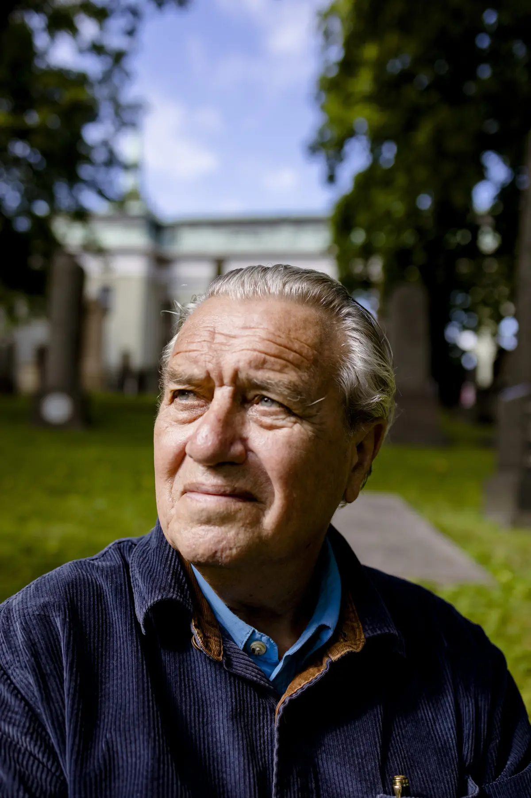

Torgeir Rebolledo Pedersen er utdannet arkitekt og debuterte med diktsamlingen Tidr i 1983. Gjennom over fire tiår har han bygget et forfatterskap som spenner fra lyrikk og essayistikk til dramatikk, barnebøker og musikkteater.
Karakteristisk for hans poesi er et lekent, språkkritisk uttrykk med hyppig bruk av ordspill og ironiske allusjoner.
I 1980-årene var han en del av den poetiske aksjonsgruppen Stuntpoetene, sammen med blant andre Karin Moe, Thorvald Steen og Erling Kittelsen. Han har opptrådt med jazzgruppen Søyr, og i 2005 ble han Norgesmester i slampoesi.
